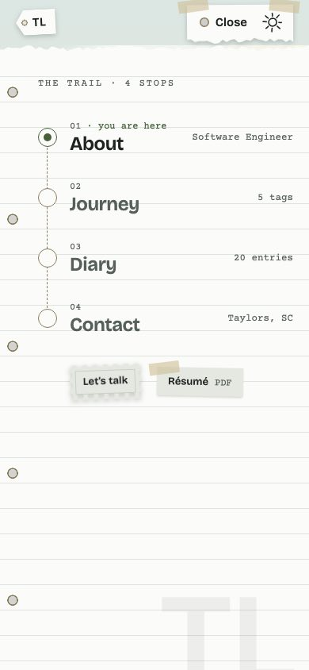
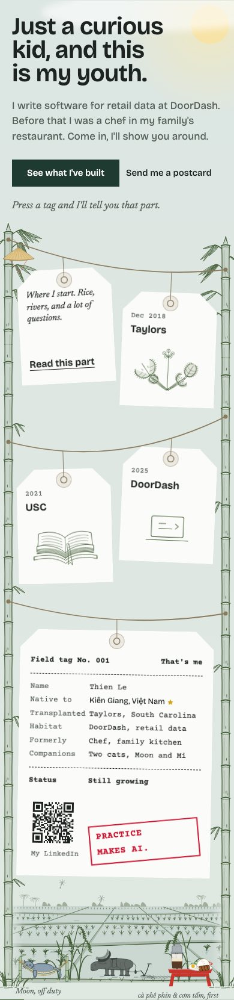
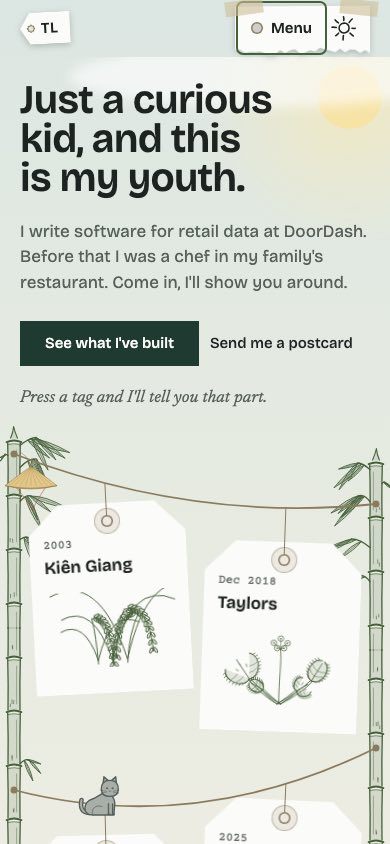
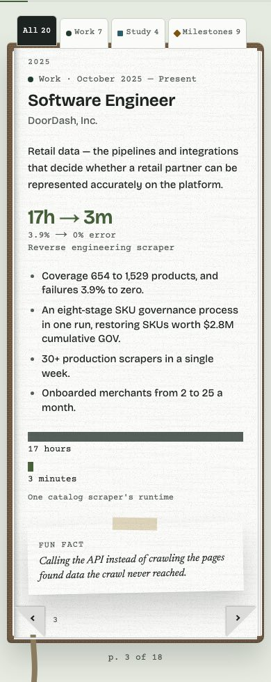
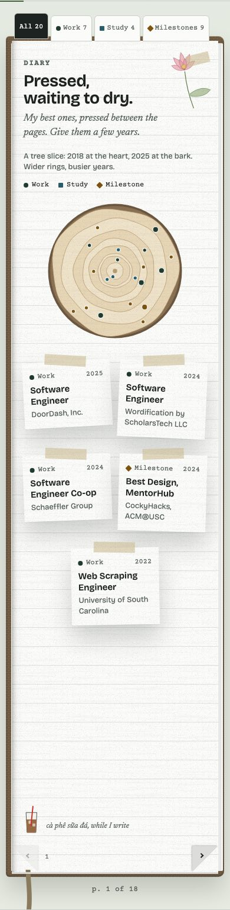
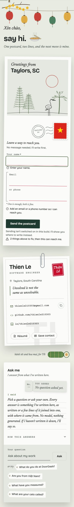
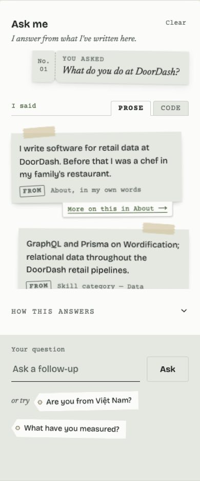
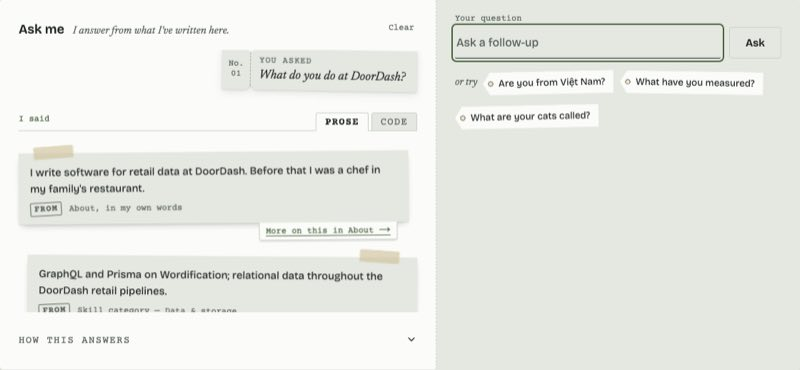
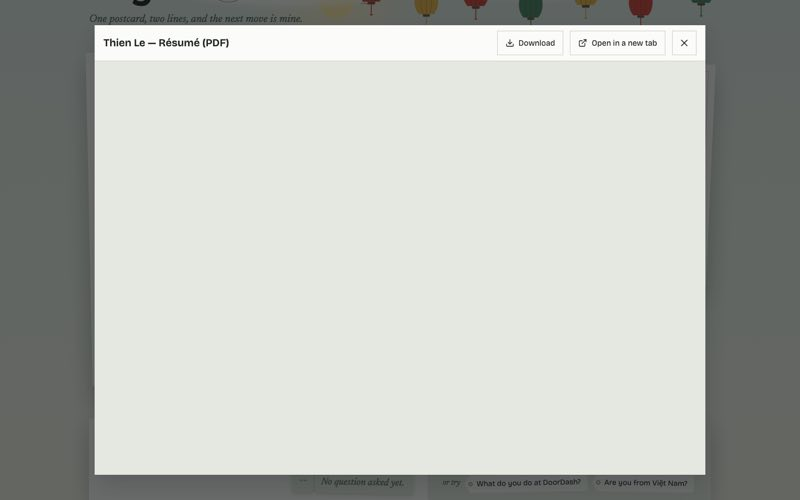

design/system
Component states
The real components, as captured. Every control also has rest, hover, focus-visible, pressed and disabled; forms have empty, error, sending and sent, in first person. Back to the specimen


















